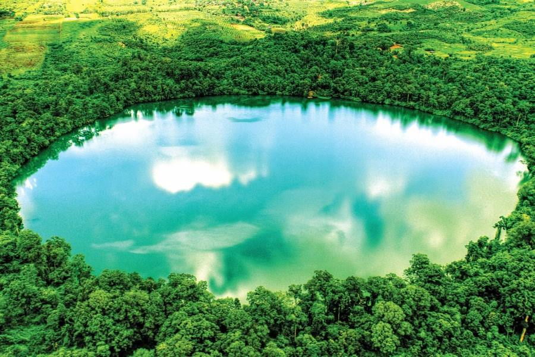

អំពីខេត្តរតនគិរី
ខេត្តរតនគិរី ស្ថិតនៅភាគឦសាននៃប្រទេសកម្ពុជា ជាតំបន់ដែលសម្បូរទៅដោយភ្នំ ព្រៃឈើ និងបឹងធម្មជាតិ។ ខេត្តនេះមានសម្រស់ធម្មជាតិដ៏ស្រស់ស្អាត និងអាកាសធាតុត្រជាក់ស្រួល។
ប្រវត្តិសង្ខេប
ខេត្តរតនគិរីធ្លាប់ជាតំបន់ឆ្ងាយ និងមានប្រជាជនជនជាតិដើមភាគតិចរស់នៅច្រើន។ ឈ្មោះ “រតនគិរី” មានន័យថា “ភ្នំត្បូងមានតម្លៃ” ដែលបង្ហាញពីធនធានធម្មជាតិដ៏សម្បូរបែបក្នុងតំបន់នេះ។
កន្លែងទេសចរណ៍សំខាន់ៗ
- បឹងយក្សឡោម
- ទឹកធ្លាក់កាទៀង
- ភ្នំជនជាតិភាគតិច
- ព្រៃធម្មជាតិដ៏ធំ
- សហគមន៍ជនជាតិដើមភាគតិច
ទីតាំងភូមិសាស្ត្រ
ខេត្តរតនគិរីស្ថិតនៅភាគឦសាននៃកម្ពុជា មានព្រំប្រទល់ជាប់ខេត្តមណ្ឌលគិរី និងខេត្តស្ទឹងត្រែង ព្រមទាំងជាប់ប្រទេសវៀតណាម និងឡាវ។ តំបន់នេះសម្បូរទៅដោយធនធានធម្មជាតិ និងព្រៃឈើធំៗ។